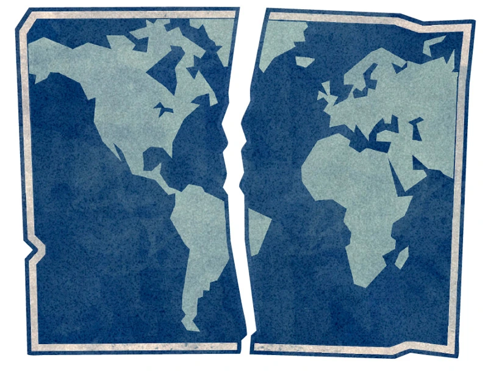
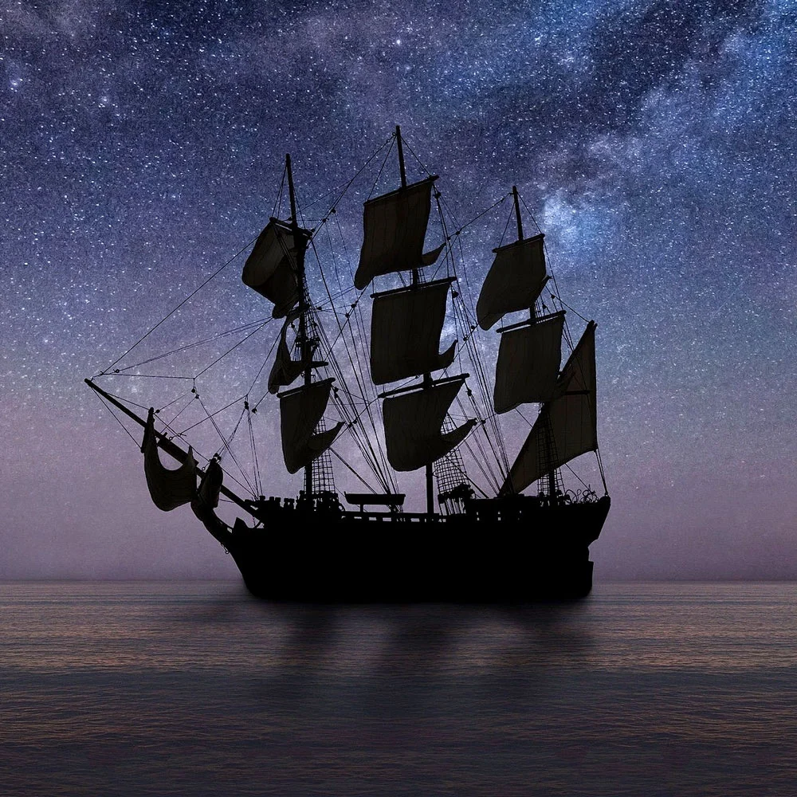
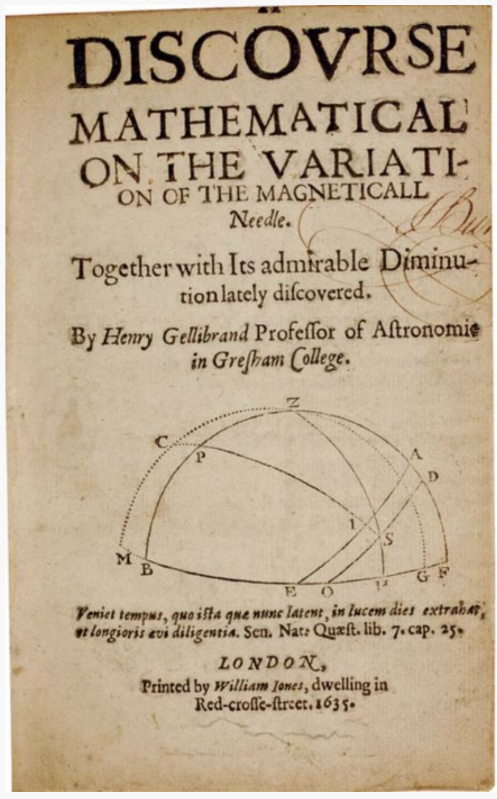

In the mountainous regions of Mexico, the Totonacs were the first civilization known to grow and cultivate vanilla pods. They mainly used them for medicinal or religious purposes, and believed it was a gift from the gods: vanilla orchids sprouted from the blood of a runaway deity and her forbidden mortal lover, both of whom were captured and slain by the princess's father.
Hey, if you've ever seen the way the vine-like vanilla orchid spreads itself along the limbs of a tree, the story is not that farfetched.
The Aztecs swooped in and conquered the Totonacs, and began demanding tax from the Totonacs in the form of vanilla beans, leaning into its edible properties. They discovered that it had aphrodisiac potencies, and combined it with cacao in a ceremonial concoction called “xocolatl” - the original hot chocolate. Since the vanilla orchid turns black after maturing and being harvested, the Aztecs called it the “black flower.”
Harvesting vanilla orchids is surprisingly dangerous, as care must be taken to avoid contact with the stem's sap. Contact with the skin can cause moderate to severe dermatitis.
A number of explorers brought Indigenous people, usually by force, from the Americas to Europe. Columbus himself captured six Caribbean islanders, presenting them at the court of Queen Isabella and King Ferdinand of Spain in 1493.
Source: by
Locations
Type
Big Tag
Little Tag
← location →
← type →
← big tag →
← little tag →

Spain and Portugal had been squabbling over the New World since its 'discovery', each claiming the islands of the Caribbean and the coastline around Brazil as its own. To resolve this conflict in May 1493, Pope Alexander VI declared that a line would be drawn right down the middle of the New World. All the land to the west of this line would be claimed by the Spanish. All the land to the east of this line would be claimed by the Portuguese. Spain and Portugal agreed, signing the Treaty of Tordesillas a year later. They settled on a line just over 1,000 miles west of the Cape Verde Islands. Portugal got Brazil. Spain got Mexico and Peru. There was only one problem. No one had a good map of the New World.
Source: by
Locations
Type
Big Tag
Little Tag
← Europe →
← not sure →
← Math & Statistics → ← Physics →
← The Compass →
← The Mean →

By the year 1500, the magnetic compass or “needle” was firmly established as a basic tool of increasingly adventurous mariners. By 1500 it was well known that the difference between true and magnetic north varied from place to place, often by considerable amounts—10° or more to the east or to the west. It was at that time believed this was due to the lack of magnetic attraction by the sea and the consequent bias in the needle toward landmasses and away from seas. The correction needed to find true north from a compass was called the variation of the needle.
Source: The Seven Pillars of Statistical Wisdom by Stephen M Stigler
Locations
Type
Big Tag
Little Tag
← Europe → ← Spain →
← type →
← big tag →
← little tag →
In 1503, Queen Isabella and King Ferdinand established the House of TradeCasa de Contratación in Seville. This acted as a central hub for all information arriving from the New World. Every report of a new island, new animal, or a new plant was sent to Seville, to be recorded and catalogued. The Casa de Contratación worked closely alongside the Council of the Indies, established in 1524 to centralize the administration of the Spanish Empire. Together, these two organizations provided some of the first salaried positions for studying science outside of universities in Europe. Geographers, astronomers, natural historians, and navigators were all employed directly by the Spanish Crown. This then was the first time that modern science became fully institutionalized in Europe.
Source: by
Locations
Type
Big Tag
Little Tag
← Europe → ← UK →
← Discovery →
← Math & Statistics →
← The Compass → ← The Mean →

1635: a change in the variation of the needle was noticed. Henry Gellibrand compared a series of determinations of the variation of the needle at the same London location at times separated by more than fifty years, and he found that the variation had changed by a considerable amount. The correction needed to get true north had been 11° east in 1580, but by 1634 this had diminished to about 4° east. Price of this anthology at time of writing: USD$21,600.
Source: The Seven Pillars of Statistical Wisdom by Stephen M Stigler